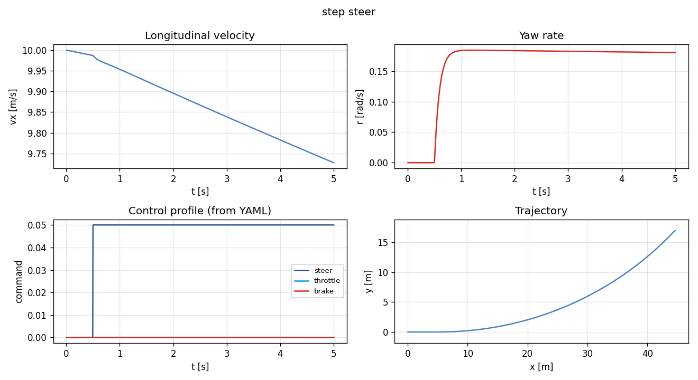
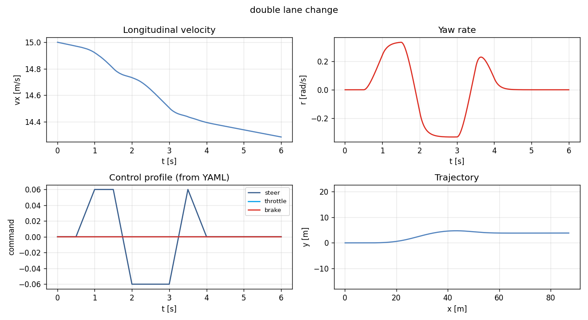
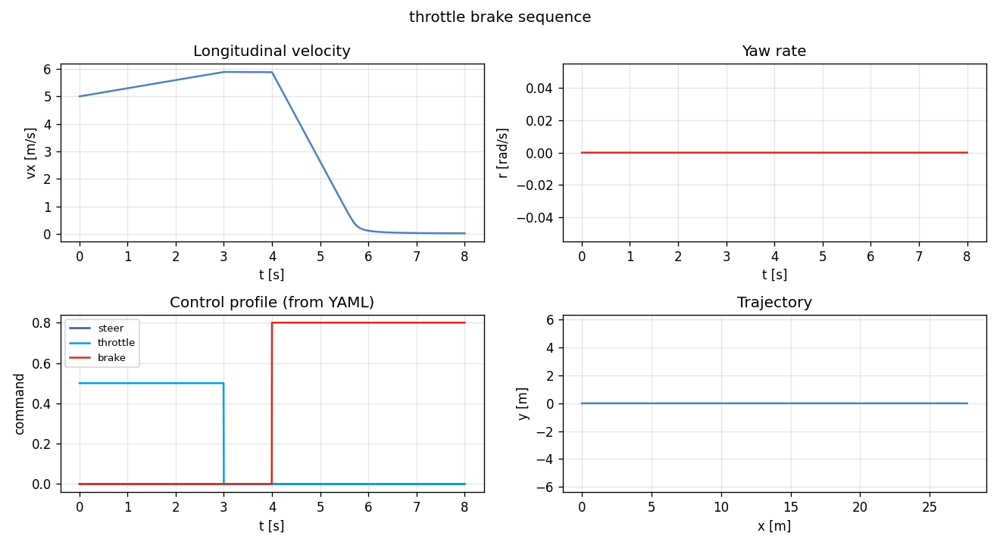
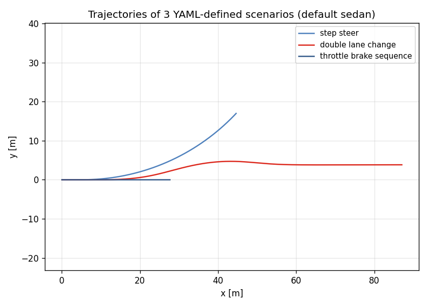

Task 18 — Scenario YAML DSL + runner¶
| Field | Value |
|---|---|
| Task ID | IM-W5-4 |
| Type | Impl |
| Date | 2026-05-29 |
| Commit | TBD |
| Status | completed |
1. 목적¶
Task 13/14 의 follow-up. 시나리오를 코드 (bicycle_run 의 hard-coded 3 case) 가 아니라 외부 YAML 로 정의 가능하게 한다.
- 사용자 / 동료가 코드 수정 없이 새 시나리오 추가 가능.
- 동일 시나리오를 sedan / sports / 향후 L2/L3 차종에 재사용.
- 회귀 테스트 / regression suite 가 YAML 으로 cherry-pick 없이 정의.
- FSK / TUR 의 실차 측정 시나리오를 그대로 simulation 에 미러링 가능 (Phase 2).
이게 없으면: - 새 시나리오마다 C++ enum + builder 코드 수정 → CI 통과 risk. - Scenario sweep (e.g. δ ∈ [-0.1, 0.1] 격자) 가 외부 스크립트로 안 됨.
2. 구현 방법¶
2.1 코드 / 데이터¶
| 위치 | 역할 |
|---|---|
core/include/vdsim/scenario.hpp |
Scenario struct + ControlSample + Interp { ZOH, Linear } 선언 |
core/src/scenario.cpp |
from_yaml, to_yaml, sample(t) 구현 |
core/CMakeLists.txt |
scenario.cpp 추가 |
examples/scenario_run.cpp |
새 CLI vdsim_scenario_run |
examples/CMakeLists.txt |
새 타깃 추가 |
configs/scenarios/step_steer.yaml |
step steer 예제 |
configs/scenarios/double_lane_change.yaml |
ISO 3888 유사 lane change |
configs/scenarios/throttle_brake_sequence.yaml |
accel→coast→brake |
tests/unit/test_scenario_yaml.cpp |
9 새 test |
2.2 Schema¶
name: step_steer # 식별자 (CSV 헤더, 로그용)
initial_vx: 10.0 # [m/s]
duration: 5.0 # [s]
dt: 0.005 # [s] outer tick
mu: 1.0 # surface mu multiplier
interpolation: zoh # zoh | linear
controls:
- { t: 0.0, throttle: 0.0, brake: 0.0, steer: 0.00, gear: 1 }
- { t: 0.5, throttle: 0.0, brake: 0.0, steer: 0.05, gear: 1 }
- { t: 5.0, throttle: 0.0, brake: 0.0, steer: 0.05, gear: 1 }
각 control field 는 optional (없으면 0, gear 는 1).
2.3 설계 결정¶
| 결정 | 채택 | 근거 |
|---|---|---|
| 시간 표현 | 절대 시간 (t in seconds) | offset / delta-t 보다 직관적, sweep 코드 단순 |
| Interpolation | zoh 기본, linear 옵션 |
step steer 등 discontinuous 시그널이 majority → ZOH default. lane change 처럼 부드러운 시그널은 linear |
controls 정렬 |
사전에 ascending 강제 (throw on unsorted) | sort 자동 정정 보다 사용자 의도 명확 보존이 우선 |
| Throttle/brake clamp | load 시 [0, 1] 로 clamp | 입력 실수 (0~100% 입력 등) 빠른 normalization |
| Gear interp | 항상 ZOH (정수 의미 보존) | linear interp 의미 없음 |
mu |
scenario-level | 노면 변화 시나리오는 Phase 2 (시간 가변 mu) |
| Out-of-range time | 양 끝값 hold | 시뮬 끝까지 마지막 control 유지 |
| Empty controls | 자동 single zero command 추가 | "빈 시나리오" 가 throw 안 하도록 |
2.4 Backward compat¶
- 기존
bicycle_run(Task 14 hard-coded 시나리오) 그대로 동작. 새 binaryvdsim_scenario_run은 별도. - params / solver YAML schema 그대로 재사용.
- 향후 L2/L3 dyn 으로 교체 시 scenario YAML 변경 없음.
3. 검증 방법 (근거)¶
3.1 9 새 unit test¶
| Test | 항목 | Pass 기준 |
|---|---|---|
| ScenarioYaml.RoundtripDefaults | save → load | name / 모든 scalar 일치 |
| ScenarioYaml.ZohSample | 3 control 사이 t 변화 | 직전 control value 유지 |
| ScenarioYaml.LinearSample | linear interp | 중간 t 에서 선형 보간 |
| ScenarioYaml.UnsortedControlsThrows | t 순서 깨진 입력 | std::runtime_error |
| ScenarioYaml.ClampsThrottleBrakeOnLoad | t=0,throttle=2.0,brake=−0.5 | 1.0 / 0.0 로 clamp |
| ScenarioYaml.MissingFileThrows | 없는 경로 | throw |
| ScenarioYaml.BadInterpThrows | interpolation: cubic |
throw |
| ScenarioYaml.NegativeDurationThrows | duration: -1.0 |
throw |
| ScenarioYaml.EmptyControlsBecomesZero | controls 키 없음 | 단일 zero command auto |
3.2 End-to-end 검증 (3 시나리오)¶
CLI:
bin/vdsim_scenario_run configs/vehicles/sedan.yaml \
configs/tires/default_pacejka.yaml \
configs/scenarios/<name>.yaml \
/tmp/sc_<name>.csv
3 시나리오 모두 정상 종료, CSV 생성, NaN 없음 확인.
3.3 한계¶
- Closed-loop control 없음 — 본 DSL 은 open-loop 시그널만. PID / pure pursuit 같은 closed-loop 은 별도 (Task 19+ 의 ControlConverter 후).
- Time-varying mu — 노면 변화 (얼음 → 마른 노면) 는 미지원. ContactProvider 확장으로 별도 task.
- External time-series CSV import — measurement (ADMA 등) 의 control 입력 가져오기는 Phase 2.
- Scenario sweep DSL — 1개 YAML 에 parameter grid 정의는 미지원. python wrapper 로 외부에서 처리.
4. 검증 결과¶
4.1 Test suite¶
80/80 통과 (이전 71 + 본 task 9 새 test).
4.2 시나리오 실행 요약¶
| Scenario | vx0 [m/s] | vx(T) [m/s] | r peak [rad/s] | y peak [m] | x(T) [m] |
|---|---|---|---|---|---|
| step_steer | 10.00 | 9.73 | 0.184 | 16.98 | 44.62 |
| double_lane_change | 15.00 | 14.29 | 0.332 | 4.72 | 87.06 |
| throttle_brake_sequence | 5.00 | 0.02 | 0.000 | 0.00 | 27.67 |
해석: - step_steer: 0.5 s coast 후 δ=0.05 hold → r 가 ≈0.18 (Task 11 의 SS yaw rate 일치). - double_lane_change: linear interp 의 매끄러운 steer 입력으로 r peak ±0.33, y peak ~4.7 m (대략 차로 1개 폭). - throttle_brake_sequence: 3 s 가속 후 4 s 부터 brake → 5 → 0 거의 정지 (8 s 시점).
4.3 시나리오 trajectory + 신호¶



좌상: vx(t), 우상: r(t), 좌하: control profile (YAML 에 정의된 그대로 입력), 우하: world-frame trajectory.
4.4 비교 plot — 3 trajectory 동시¶

5. 판단¶
- 결과: pass
- 근거:
- 9 / 9 새 unit test 통과, 누적 80 / 80.
- 3 외부 YAML 시나리오 모두 정상 실행 + CSV 정상.
- control profile 이 정확히 YAML 명세대로 (특히 linear interp 의 double lane change 가 매끄러움).
- 부정확 입력 (unsorted / negative duration / bad interp) 모두 명시적 throw.
- 미해결 / Follow-up:
- Closed-loop control — Task 19 의 L2 안에서 ControlConverter 모듈 시작.
- Surface dynamics — time-varying mu, slope, ContactProvider 의 RoughnessProvider 통합.
- External CSV / measurement import — Task 21+ (Phase 2).
- Scenario sweep DSL — python wrapper 또는 별도 high-level YAML.